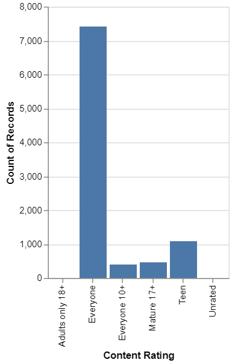

Visualización de datos a través de estratos#
Objetivos
Crear interactividad en los gráficos de dispersión utilizando
altairUtilizar el
zoom inyout,hoverytooltip, y seleccionar y resaltar en los gráficos de dispersiónCrear gráficos de barras y mapas de calor interactivos
Crear enlaces dinámicos entre diferentes tipos de gráficos dentro de una única visualización interactiva
En este capítulo, aprenderá a crear visualizaciones interactivas para datos estratificados con respecto a cualquier variable categórica.
Introducción#
Una observación hecha en la sección anterior fue que cuando cuando se trata de introducir interactividad en ciertos tipos de gráficos de
Python,plotlypuede a veces ser verboso, y puede implicar una curva de aprendizaje empinada. Por lo tanto, en este capítulo, presentaremosaltair, una biblioteca diseñada especialmente para generar gráficos interactivos. - Demostraremos cómo crear visualizaciones interactivas conaltairpara datos estratificados con respecto a cualquier variable categórica. A modo de ilustración, utilizaremos un conjunto de datos para generar gráficos de dispersión y de barras con las características del conjunto de datos y añadir una variedad de elementos interactivos a los gráficos. También conoceremos algunas ventajas específicas del uso dealtairsobre una biblioteca más polivalente comoplotly.Utilizaremos el conjunto de datos del
Índice de Felicidad Planetaria (HPI)(ver happyplanetindex) a lo largo de esta sección.Este conjunto de datos muestra en qué lugares del mundo la gente utiliza recursos ecológicos de forma más eficiente para vivir una vida larga y feliz. No sólo es un recurso interesante para conocer mejor las condiciones ecológicas y el bienestar socioeconómico de bienestar socioeconómico en varias partes de nuestro planeta, sino que también tiene una interesante mezcla de características que nos ayudan a demostrar ciertos conceptos clave de la visualización interactiva.
Gráficos de dispersión interactivos#
Como ya sabe, los gráficos de dispersión son uno de los tipos de gráficos más esenciales para presentar patrones globales dentro de un conjunto de datos. Naturalmente, es importante saber cómo introducir la interactividad en estos gráficos. En primer lugar, veremos las acciones de zoom y restablecimiento de los gráficos. Antes de eso, sin embargo, vamos a echar un vistazo al conjunto de datos. Podemos ver el conjunto de datos del HPI utilizando el siguiente código
import warnings
warnings.filterwarnings('ignore')
import pandas as pd
hpi_url = "https://raw.githubusercontent.com/lihkir/Uninorte/main/AppliedStatisticMS/DataVisualizationRPython/Lectures/Python/PythonDataSets/hpi_data_countries.tsv"
hpi_df = pd.read_csv(hpi_url, sep='\t')
hpi_df.head()
| HPI Rank | Country | Region | Life Expectancy (years) | Wellbeing (0-10) | Inequality of outcomes | Ecological Footprint (gha/capita) | Happy Planet Index | |
|---|---|---|---|---|---|---|---|---|
| 0 | 1 | Costa Rica | Americas | 79.1 | 7.3 | 15% | 2.8 | 44.7 |
| 1 | 2 | Mexico | Americas | 76.4 | 7.3 | 19% | 2.9 | 40.7 |
| 2 | 3 | Colombia | Americas | 73.7 | 6.4 | 24% | 1.9 | 40.7 |
| 3 | 4 | Vanuatu | Asia Pacific | 71.3 | 6.5 | 22% | 1.9 | 40.6 |
| 4 | 5 | Vietnam | Asia Pacific | 75.5 | 5.5 | 19% | 1.7 | 40.3 |
Tenga en cuenta que hay 5 características numéricas/cuantitativas en este conjunto de datos:
Life Expectancy (years)
Wellbeing (0-10)
Inequality of outcomes
Ecological Footprint (gha/capita): Consumo de recursos y la producción de desechos de una población determinada
Happy Planet Index
Hay dos características categóricas/nominales: Country y Region. En
altairlos rasgos cuantitativos se denotan como Q, y los rasgos nominales se denotan como N. Veremos pronto cómo utilizar esto en nuestras visualizaciones.Generemos y observemos un gráfico de dispersión estático, mediante un ejercicio, de las caracteristicas Wellbeing (0-10) and Happy Planet Index para cada país, utilizando diferentes colores para denotar la región a la que pertenece el país y seguir adelante y añadirle interactividad.
Añadir Zoom-In y Zoom-Out a un gráfico de dispersión estático#
En este ejercicio, generaremos un gráfico de dispersión estático utilizando
matplotlib. Utilizaremos el conjunto de datos hpi_data_countries para el gráfico y analizaremos las puntuaciones de Wellbeing de cada país representado por la leyenda del gráfico. Seguiremos adelante y añadiremos una función dezoom. Para ello utilizaremos la bibliotecaaltair.
Cargar el conjunto de datos hpi y leer desde el conjunto de datos usando pandas:
import pandas as pd
hpi_url = "https://raw.githubusercontent.com/lihkir/Uninorte/main/AppliedStatisticMS/DataVisualizationRPython/Lectures/Python/PythonDataSets/hpi_data_countries.tsv"
hpi_df = pd.read_csv(hpi_url, sep='\t')
Trazar un gráfico de dispersión estático utilizando
matplotlib
import seaborn as sns
import matplotlib.pyplot as plt
fig = plt.figure()
ax = fig.add_subplot(111)
ax = sns.scatterplot(x='Wellbeing (0-10)', y='Happy Planet Index', hue='Region', data=hpi_df)
plt.show()
Cada punto representa un país de una de las 7 regiones. El Wellbeing y el Happy Planet Index parecen estar correlacionados. Vemos una tendencia en las puntuaciones del Happy Planet Index y las puntuaciones de Wellbeing de las distintas regiones. Ahora que tenemos un gráfico de dispersión estático, vamos a explorar la interactividad de este gráfico. Veremos cómo hacer
zoom inyzoom out.
Importa el módulo
altaircomoalt. Antes debe instalaraltairusandopip install altair vega_datasets. En versiones anteriores de notebook (<5.3) es necesario habilitar adicionalmente la extensión:jupyter nbextension install --sys-prefix --py vega
import altair as alt
Proporcione el DataFrame elegido (hpi_df en nuestro caso) a la función
altair Chart. Utilice la funciónmark_circle()para denotar puntos de datos en el gráfico de dispersión utilizando círculos rellenos.Utilice la función
encodepara especificar las características en los ejes \(x\) e \(y\). Aunque también usamos el parámetro decoloren esta función para color-code los puntos de datos usando la característica de la región, esto es opcional. Por último, añada la funcióninteractive()para que el gráfico sea interactivo parazooming
alt.Chart(hpi_df).mark_circle().encode(
x='Wellbeing (0-10):Q',
y='Happy Planet Index:Q',
color='Region:N',).interactive()
¿Se ha dado cuenta de que hemos añadido un sufijo: Q junto a nuestras características cuantitativas y un sufijo: N junto a nuestras características nominales? Añadir sufijos como éste ayuda a altair a conocer el tipo de antemano, en lugar de tener que inferirlo por sí mismo.
Puede intentar eliminar los sufijos en este gráfico y verá que el gráfico se sigue generando sin errores porque altair puede adivinar el tipo de característica en este caso. Es una buena práctica incluir los sufijos ya que hay casos en los que
altairno puede inferir el tipo de característica.Los diversos parámetros, como \(x\), y \(y\) el color, que especificamos en la función de codificación son llamados canales en
altair.
Añadir la funcionalidad Hover y Tooltip a un gráfico de dispersión#
Cargar el conjunto de datos hpi y leer desde el conjunto de datos usando pandas:
import pandas as pd
hpi_url = "https://raw.githubusercontent.com/lihkir/Uninorte/main/AppliedStatisticMS/DataVisualizationRPython/Lectures/Python/PythonDataSets/hpi_data_countries.tsv"
hpi_df = pd.read_csv(hpi_url, sep='\t')
Importa el módulo
altaircomoalt
import altair as alt
Proporcione el
DataFrameelegido (hpi_dfen nuestro caso) a la funciónaltair Chartdealtair. Utilice la funciónmark_circle()para indicar los puntos de datos en el gráfico de dispersión de dispersión mediante círculos rellenos. Utilice la función encode para especificar las características en los ejes \(x\) y \(y\). Aunque utilizamos el parámetro decoloren esta función para codificar en color los puntos de datos utilizando la característica de región, esto es opcional.
alt.Chart(hpi_df).mark_circle().encode(
x = 'Wellbeing (0-10):Q',
y = 'Happy Planet Index:Q',
color = 'Region:N',
tooltip = ['Country', 'Region', 'Wellbeing (0-10)', 'Happy Planet Index', 'Life Expectancy (years)']
)
En el gráfico anterior, verá que las características mencionadas en el parámetro “tooltip” de la función de codificación se muestran cuando el cuando el cursor se acerca a cualquier punto de datos. Sin embargo, la función de zoom se ha perdido. ¿Cómo puede recuperarla? Muy sencillo: ¡añada la función
interactive()!Añade la función
interactive()para recuperar la función dezoomen el gráfico como como se muestra aquí
alt.Chart(hpi_df).mark_circle().encode(
x = 'Wellbeing (0-10):Q',
y = 'Happy Planet Index:Q',
color = 'Region:N',
tooltip = ['Country', 'Region', 'Wellbeing (0-10)', 'Happy Planet Index', 'Life Expectancy (years)']
).interactive()
Consideremos ahora un escenario más interesante. Supongamos que queremos seleccionar un área en el gráfico para examinar los puntos de datos dentro de ella
Explorar la funcionalidad de seleccionar y resaltar en un gráfico de dispersión#
En este ejercicio, vamos a utilizar la funcionalidad de seleccionar y resaltar utilizando
altair. Nosotros podemos hacer esto usando una función llamadaadd_selection. Primero tenemos que definir una variable que almacenará un intervalo de selección y luego generar el gráfico al que queremos añadir la función de selección. En el gráfico resultante, podemos hacer clic y luego arrastrar el cursor para crear un área de selección, que se coloreará de gris. Sigamos los siguientes pasos para hacerlo
Cargar el conjunto de datos hpi y leer desde el conjunto de datos usando pandas:
import pandas as pd
hpi_url = "https://raw.githubusercontent.com/lihkir/Uninorte/main/AppliedStatisticMS/DataVisualizationRPython/Lectures/Python/PythonDataSets/hpi_data_countries.tsv"
hpi_df = pd.read_csv(hpi_url, sep='\t')
Importa el módulo
altaircomoalt
import altair as alt
Defina la variable
selected_areapara almacenar el intervalo de selección
selected_area = alt.selection_interval()
Proporcione el
DataFrameelegido (hpi_dfen nuestro caso) a la funciónaltair ChartdealtairUtilice la función
mark_circle()para denotar puntos de datos en el gráfico de dispersión utilizando círculos rellenos. Utilice la funciónencodepara especificar las características en los ejes \(x\) e y \(y\). Aunque hemos utilizado el parámetro de color en esta función para colorear los puntos de datos utilizando la característica de región, esto es opcional. Utilice la funciónadd_selection()para especificar el área seleccionada
alt.Chart(hpi_df).mark_circle().encode(
x = 'Wellbeing (0-10):Q',
y = 'Happy Planet Index:Q',
color = 'Region:N'
).add_selection(
selected_area
)
Añade
alt_valuecomolightgraypara que todos los puntos fuera de la selección sean grises
selected_area = alt.selection_interval()
alt.Chart(hpi_df).mark_circle().encode(
x = 'Wellbeing (0-10):Q',
y = 'Happy Planet Index:Q',
color = alt.condition(selected_area, 'Region:N', alt.value('lightgray'))
).add_selection(
selected_area
)
Establecemos el parámetro de
coloren la función de codificación a una condición dealtairque retiene los colores de sólo los puntos dentro del área seleccionada. Esto puede ser útil cuando se desea obtener información sobre un rango particular de características en los ejes de un gráfico de dispersión.
Generación de un trazado con las funciones de selección, zoom y hover. Selección a través de múltiples parcelas#
En este ejercicio, seguiremos trabajando con el conjunto de datos del Happy Planet Index. La tarea de tarea consiste en crear un gráfico de dispersión para Well-being vs Happy Planet Index y hacer
zoomen el área con un alto Well-being y un alto Happy Planet index.
La función de selección puede ser mucho más potente cuando se vincula a varios gráficos. Consideraremos el ejemplo de dos gráficos de dispersión:
wellbeing vs happy planet index
life expectancy vs happy planet index
En este ejercicio, vamos a ir paso a paso para generar un gráfico interactivo. Para nuestro primer gráfico de dispersión, ya que queremos que el eje y sea común en ambos gráficos, especificaremos sólo el eje \(y\) en la función de codificación de nuestro gráfico de
altair, y luego añadiremos las características del eje \(x\) por separado en el objetoChart. Además, para poner los dos gráficos uno detrás de otro y permitir la selección entre ellos, utilizaremos la funciónaltairvconcat
Cargar el conjunto de datos hpi y leer desde el conjunto de datos usando pandas:
import pandas as pd
hpi_url = "https://raw.githubusercontent.com/lihkir/Uninorte/main/AppliedStatisticMS/DataVisualizationRPython/Lectures/Python/PythonDataSets/hpi_data_countries.tsv"
hpi_df = pd.read_csv(hpi_url, sep='\t')
Importa el módulo
altaircomoalt
import altair as alt
Trace el gráfico de dispersión con la función
Chart altair vconcatpara colocar dos gráficos verticalmente uno tras otro
chart = alt.Chart(hpi_df).mark_circle().encode(
y='Happy Planet Index',
color='Region:N'
)
chart1 = chart.encode(x = 'Wellbeing (0-10)')
chart2 = chart.encode(x = 'Life Expectancy (years)')
alt.vconcat(chart1, chart2)
Por cierto, existen atajos para las funciones
hconcatyvconcat. Podemos sustituiralt.hconcat(chart1, chart2)porchart1 | chart2yalt.vconcat(chart1, chart2)porchart1 & chart2Añade las funciones
hoverytooltipque enlazan los dos gráficos utilizando el siguiente código
# hover and tooltip across multiple charts
selected_area = alt.selection_interval()
chart = alt.Chart(hpi_df).mark_circle().encode(
y = 'Happy Planet Index',
color=alt.condition(selected_area, 'Region', alt.value('lightgray'))
).add_selection(
selected_area
)
chart1 = chart.encode(x = 'Wellbeing (0-10)')
chart2 = chart.encode(x = 'Life Expectancy (years)')
chart1 | chart2
Intente seleccionar un área en cualquiera de las gráficas. Observará que la selección en un gráfico automáticamente lleva a resaltar los mismos puntos de datos en el otro gráfico.
Selección basada en los valores de una característica#
En este ejercicio, crearemos un gráfico interactivo donde podremos ver los puntos de datos en función de una Region determinada. Utilizaremos la función
selection_single()para obtener un conjunto seleccionado de puntos de datos. Si se estudia el código con atención, se verá que los parámetros de esta función se explican por sí mismos. Para cualquier aclaración, por favor lea sobre ellos en la documentación oficial en https://altair-viz.github.io/user_guide/generated/api/altair.selection_single.html.
Importe los módulos de
Pythonnecesarios
import altair as alt
import pandas as pd
Lectura del conjunto de datos:
hpi_url = "https://raw.githubusercontent.com/lihkir/Uninorte/main/AppliedStatisticMS/DataVisualizationRPython/Lectures/Python/PythonDataSets/hpi_data_countries.tsv"
hpi_df = pd.read_csv(hpi_url, sep='\t')
hpi_df.head()
| HPI Rank | Country | Region | Life Expectancy (years) | Wellbeing (0-10) | Inequality of outcomes | Ecological Footprint (gha/capita) | Happy Planet Index | |
|---|---|---|---|---|---|---|---|---|
| 0 | 1 | Costa Rica | Americas | 79.1 | 7.3 | 15% | 2.8 | 44.7 |
| 1 | 2 | Mexico | Americas | 76.4 | 7.3 | 19% | 2.9 | 40.7 |
| 2 | 3 | Colombia | Americas | 73.7 | 6.4 | 24% | 1.9 | 40.7 |
| 3 | 4 | Vanuatu | Asia Pacific | 71.3 | 6.5 | 22% | 1.9 | 40.6 |
| 4 | 5 | Vietnam | Asia Pacific | 75.5 | 5.5 | 19% | 1.7 | 40.3 |
Cree una variable
input_dropdownutilizando la funciónbinding_select()y establezca el parámetro options en la lista de regiones de nuestro conjunto de datos. Utilice la funciónselection_single()para seleccionar un conjunto de puntos de datos. Utilice la variable de color para almacenar la condición bajo la cual se seleccionarán los puntos de dato
input_dropdown = alt.binding_select(options = list(set(hpi_df.Region)))
selected_points = alt.selection_single(fields = ['Region'], bind = input_dropdown, name = 'Select')
color = alt.condition(selected_points,
alt.Color('Region:N'),
alt.value('lightgray'))
alt.Chart(hpi_df).mark_circle().encode(
x = 'Wellbeing (0-10):Q',
y = 'Happy Planet Index:Q',
color = color,
tooltip='Region:N'
).add_selection(
selected_points
)
El gráfico anterior tiene inicialmente todos sus puntos de datos en color. Sin embargo, al seleccionar un valor para la característica Region en el menú desplegable de entrada, observará que los correspondientes países están resaltados en color, mientras que todos los demás países están en gris. En los dos gráficos anteriores, el primero muestra los puntos de datos de la región de Americas y el segundo gráfico muestra los puntos de datos de la región Post-communist.
Ahora que sabemos cómo añadir interactividad a los gráficos de dispersión, vamos a aprender a introducir la interactividad en otros dos tipos de visualización importantes: los gráficos de barras y los mapas de calor
Añadir una función de Zoom-In/Zoom-Out y calcular la media en un gráfico de barras estático#
En este ejercicio, primero generaremos un simple gráfico de barras (estático) y luego exploraremos la interactividad, como el acercamiento y el alejamiento. A continuación, utilizaremos el mismo gráfico de barras y averiguaremos la media del Happy Planet Index de cada región. Utilizaremos la biblioteca
altairy el conjunto de datos del Happy Planet Index
Importe los módulos de Python necesarios
import altair as alt
import pandas as pd
Lectura del conjunto de datos:
hpi_url = "https://raw.githubusercontent.com/lihkir/Uninorte/main/AppliedStatisticMS/DataVisualizationRPython/Lectures/Python/PythonDataSets/hpi_data_countries.tsv"
hpi_df = pd.read_csv(hpi_url, sep='\t')
Utilice la función
mark_bar()para señalar puntos de datos en el gráfico de barras. Utilice la función encode para especificar las características en los ejes \(x\) e \(y\)
alt.Chart(hpi_df).mark_bar().encode(
x='Region:N',
y='mean(Happy Planet Index):Q',
)
Sin embargo, el gráfico anterior parece demasiado estrecho. Podemos arreglar esto fácilmente estableciendo el anchura del gráfico a un valor diferente utilizando la función de propiedades. Establezca el ancho a 400 utilizando la función de propiedades para aumentar el ancho del gráfico de barras:
alt.Chart(hpi_df).mark_bar().encode(
x = 'Region:N',
y = 'mean(Happy Planet Index):Q'
).properties(width=400)
Utiliza la función
interactivepara zoom in/out:
import altair as alt
alt.Chart(hpi_df).mark_bar().encode(
x = 'Region:N',
y = alt.Y('Happy Planet Index')
).properties(width=400).interactive()
Utilice el operador | para mostrar la media del HPI en todas las regiones:
import altair as alt
bars = alt.Chart(hpi_df).mark_bar().encode(
x = 'Region:N',
y = 'mean(Happy Planet Index):Q'
).properties(width=400)
line = alt.Chart(hpi_df).mark_rule(color='firebrick').encode(
y = 'mean(Happy Planet Index):Q',
size = alt.SizeValue(3)
)
bars | line
No queremos que la línea se coloque junto a nuestro gráfico de barras. La queremos en el gráfico. Entonces, ¿cómo lo hacemos? Para ello, tenemos que utilizar el concepto de capa en
altair. La idea es crear variables para almacenar el gráfico de barras y el gráfico de líneas, y luego superponerlos uno encima del otro.Add the layer function from the
altairlibrary
import altair as alt
bars = alt.Chart().mark_bar().encode(
x = 'Region:N',
y = 'mean(Happy Planet Index):Q'
).properties(width=400)
line = alt.Chart().mark_rule(color='firebrick').encode(
y='mean(Happy Planet Index):Q',
size = alt.SizeValue(3)
)
alt.layer(bars, line, data=hpi_df)
Así pues, ahora sabemos que la media del Índice del Planeta Feliz en todas las regiones es de alrededor de 26. Además, también hay que tener en cuenta que no especificamos el conjunto de datos hasta que utilizamos la función de capa. Es decir, no proporcionamos el conjunto de datos hpi_df en la función
Chart()como es habitual. En su lugar, lo mencionamos en la función de capa con el parámetro data = hpi_df.Ahora que conoce el concepto de estratificación en
altair, puede confiar en un atajo para ello. Sólo tienes que escribir el código de forma independiente para diferentes parcelas, como lo harías normalmente, y luego utilizar el operador+, como se muestra en el siguiente ejemplo
Un atajo alternativo para representar la media en un gráfico de barras#
En este ejercicio, calcularemos la media del índice HPI en un gráfico de barras utilizando un del código utilizado en el Ejercicio 33, añadiendo cálculo de la media en un gráfico de barras estático.
import altair as alt
bars = alt.Chart(hpi_df).mark_bar().encode(
x = 'Region:N',
y = 'mean(Happy Planet Index):Q',
).properties(width=400)
line = alt.Chart(hpi_df).mark_rule(color = 'firebrick').encode(
y = 'mean(Happy Planet Index):Q',
size = alt.SizeValue(3)
)
bars + line
Utilice el mecanismo de clic y arrastre utilizando el siguiente código en
altair. Puede utilizar el mecanismo de clic y arrastre para seleccionar cualquier conjunto de barras y ver cómo la línea que indica la media del Happy Planet Index se desplaza en consecuencia.
import altair as alt
selected_bars = alt.selection(type = 'interval', encodings = ['x'])
bars = alt.Chart(hpi_df).mark_bar().encode(
x = 'Region:N',
y = 'mean(Happy Planet Index):Q',
opacity = alt.condition(selected_bars, alt.OpacityValue(1), alt.OpacityValue(0.7)),
).properties(width=400).add_selection(
selected_bars
)
line = alt.Chart(hpi_df).mark_rule(color = 'firebrick').encode(
y = 'mean(Happy Planet Index):Q',
size = alt.SizeValue(3)
).transform_filter(
selected_bars
)
bars + line
Añadir una función de zoom en un mapa de calor estático#
En este ejercicio, utilizaremos
altairpara crear un mapa de calor que indique el número de países con el HPI y el Wellbeing en varios rangos. A continuación, añadiremos la función de zoom al mapa. También añadiremos círculos en el mapa de calor para mostrar diferentes países.
Importe los módulos de Python necesarios
import altair as alt
import pandas as pd
Lectura del conjunto de datos:
hpi_url = "https://raw.githubusercontent.com/lihkir/Uninorte/main/AppliedStatisticMS/DataVisualizationRPython/Lectures/Python/PythonDataSets/hpi_data_countries.tsv"
hpi_df = pd.read_csv(hpi_url, sep='\t')
hpi_df.head()
| HPI Rank | Country | Region | Life Expectancy (years) | Wellbeing (0-10) | Inequality of outcomes | Ecological Footprint (gha/capita) | Happy Planet Index | |
|---|---|---|---|---|---|---|---|---|
| 0 | 1 | Costa Rica | Americas | 79.1 | 7.3 | 15% | 2.8 | 44.7 |
| 1 | 2 | Mexico | Americas | 76.4 | 7.3 | 19% | 2.9 | 40.7 |
| 2 | 3 | Colombia | Americas | 73.7 | 6.4 | 24% | 1.9 | 40.7 |
| 3 | 4 | Vanuatu | Asia Pacific | 71.3 | 6.5 | 22% | 1.9 | 40.6 |
| 4 | 5 | Vietnam | Asia Pacific | 75.5 | 5.5 | 19% | 1.7 | 40.3 |
Proporcione el DataFrame elegido (hpi_df en nuestro caso) a la función
altair Chart. Utilice la funciónmark_rect()para indicar los puntos de datos que se utilizarán para el mapa de calor (ver Simple Heatmap). Utilice la función encode para especificar las características en los ejes \(x\) e \(y\). Asigne a el parámetrobinen True para que ajuste automáticamente cadabin
alt.Chart(hpi_df).mark_rect().encode(
alt.X('Happy Planet Index:Q', bin=True),
alt.Y('Wellbeing (0-10):Q', bin=True),
alt.Color('count()', scale=alt.Scale(scheme='greenblue'), legend=alt.Legend(title='Total Countries'))
)
Utilice la función
interactivey añada la capacidad de zoom. Utilice el siguiente código
alt.Chart(hpi_df).mark_rect().encode(
alt.X('Happy Planet Index:Q', bin = True),
alt.Y('Wellbeing (0-10):Q', bin = True),
alt.Color('count()', scale = alt.Scale(scheme='greenblue'), legend = alt.Legend(title='Total Countries'))
).interactive()
Al igual que podemos utilizar una paleta de colores para indicar el número de países en cada celda del mapa de calor, también podemos dibujar
círculos de distintos tamaños en un mapa de calorpara indicar el número de países. Dibuja círculos en el mapa térmico utilizando la función heatmap+circles. Los distintos tamaños de los círculos indican el número de países con un rango deWellbeingvariable.
heatmap = alt.Chart(hpi_df).mark_rect().encode(
alt.X('Happy Planet Index:Q', bin=True),
alt.Y('Wellbeing (0-10):Q', bin=True)
)
circles = heatmap.mark_point().encode(
alt.ColorValue('lightgray'),
alt.Size('count()', legend=alt.Legend(title='Records in Selection'))
)
heatmap + circles
Creación de un diagrama de barras y un mapa de calor contiguos#
En este ejercicio, seguiremos trabajando con el conjunto de datos del HPI. El objetivo es dibujar un diagrama de barras que represente el número de países en cada región y un mapa de calor al lado, indicando el número de países en varios rangos de wellbeing y life-expectancy
Importe los módulos de Python necesarios
import altair as alt
import pandas as pd
Lectura del conjunto de datos:
hpi_url = "https://raw.githubusercontent.com/lihkir/Uninorte/main/AppliedStatisticMS/DataVisualizationRPython/Lectures/Python/PythonDataSets/hpi_data_countries.tsv"
hpi_df = pd.read_csv(hpi_url, sep='\t')
Genere el gráfico de barras requerido utilizando la función
mark_bar()
alt.Chart(hpi_df).mark_bar().encode(
x = 'Region:N',
y = 'count():Q'
).properties(width=350)
Genera el mapa de calor requerido utilizando la función
mark_rect()
alt.Chart(hpi_df).mark_rect().encode(
alt.X('Wellbeing (0-10):Q', bin = True),
alt.Y('Life Expectancy (years):Q', bin = True),
alt.Color('count()', scale=alt.Scale(scheme='greenblue'), legend=alt.Legend(title='Total Countries'))
).properties(width=350)
Combine el código para colocar el gráfico de barras y el mapa de calor uno al lado del otro utilizando la función
bars | heatmap
bars = alt.Chart(hpi_df).mark_bar().encode(
x = 'Region:N',
y = 'count():Q'
).properties(width=350)
heatmap = alt.Chart(hpi_df).mark_rect().encode(
alt.X('Wellbeing (0-10):Q', bin = True),
alt.Y('Life Expectancy (years):Q', bin = True),
alt.Color('count()', scale = alt.Scale(scheme = 'greenblue'), legend = alt.Legend(title = 'Total Countries'))
).properties(width=350)
bars | heatmap
Vincular dinámicamente un gráfico de barras y un mapa de calor#
En este ejercicio, enlazaremos un gráfico de barras y un mapa de calor de forma dinámica. Considere un escenario en el que desea poder hacer clic en cualquiera de las barras de un gráfico de barras y tener un mapa de calor correspondiente a la región representada por la barra. Así, por ejemplo, quiere actualizar el mapa térmico de la Life Expectancy frente al Well Being sólo para los países de una región determinada.
Importe los módulos de
Pythonnecesarios
import altair as alt
import pandas as pd
Lectura del conjunto de datos:
hpi_url = "https://raw.githubusercontent.com/lihkir/Uninorte/main/AppliedStatisticMS/DataVisualizationRPython/Lectures/Python/PythonDataSets/hpi_data_countries.tsv"
hpi_df = pd.read_csv(hpi_url, sep='\t')
hpi_df.head()
| HPI Rank | Country | Region | Life Expectancy (years) | Wellbeing (0-10) | Inequality of outcomes | Ecological Footprint (gha/capita) | Happy Planet Index | |
|---|---|---|---|---|---|---|---|---|
| 0 | 1 | Costa Rica | Americas | 79.1 | 7.3 | 15% | 2.8 | 44.7 |
| 1 | 2 | Mexico | Americas | 76.4 | 7.3 | 19% | 2.9 | 40.7 |
| 2 | 3 | Colombia | Americas | 73.7 | 6.4 | 24% | 1.9 | 40.7 |
| 3 | 4 | Vanuatu | Asia Pacific | 71.3 | 6.5 | 22% | 1.9 | 40.6 |
| 4 | 5 | Vietnam | Asia Pacific | 75.5 | 5.5 | 19% | 1.7 | 40.3 |
Seleccione la región mediante el método de
selection
selected_region = alt.selection(type="single", encodings=['x'])
heatmap = alt.Chart(hpi_df).mark_rect().encode(
alt.X('Wellbeing (0-10):Q', bin=True),
alt.Y('Life Expectancy (years):Q', bin=True),
alt.Color('count()', scale = alt.Scale(scheme = 'greenblue'), legend = alt.Legend(title = 'Total Countries'))
).properties(
width=350
)
Colocar los círculos en un mapa de calor
circles = heatmap.mark_point().encode(
alt.ColorValue('grey'),
alt.Size('count()', legend = alt.Legend(title='Records in Selection'))
).transform_filter(
selected_region
)
Utilice la función
heatmap+circles | barspara vincular dinámicamente el gráfico de barras y el mapa de calor
bars = alt.Chart(hpi_df).mark_bar().encode(
x = 'Region:N',
y = 'count()',
color = alt.condition(selected_region, alt.ColorValue("steelblue"), alt.ColorValue("grey"))
).properties(
width=350
).add_selection(selected_region)
heatmap + circles | bars
Al hacer clic en cada gráfico de barras, verás que la paleta de colores que indica el total de países en de bienestar y esperanza de vida permanece constante, mientras que los círculos los círculos se actualizan para reflejar el número de países en el rango correspondiente para la región seleccionada.
La galería de ejemplos en https://altair-viz.github.io/gallery/index.html le proporcionará con una comprensión aún más profunda de las posibilidades de visualización en
altair
En la sección anterior, presentamos una visión general de algunas formas importantes de añadir interactividad a los gráficos de barras y a los mapas de calor. En concreto, se ha aprendido
Cómo generar un gráfico de barras con la función
altairmark_bar()Cómo generar un mapa de calor utilizando la función
altair mark_rect(), y cómo utilizar paletas de colores y círculos para representar visualmente los datos del mapa de calorCómo añadir capacidades de zoom a los gráficos de barras y a los mapas de calor utilizando la función función
interactive()Cómo utilizar la capacidad de estratificación en
altairpara presentar gráficos uno encima del otro utilizando la funciónlayer()o el operador+Cómo enlazar dinámicamente gráficos de barras y mapas de calor para crear una única y atractiva visualización
Ejercicio para entregar#
Trabajaremos con el conjunto de datos de Google Play Store Apps alojado en googleplaystore.csv. Su tarea es crear una visualización con:
Un gráfico de barras de un número de aplicaciones estratificado por cada categoría Content Rating (calificado por Everyone/Teen).
Un mapa de calor que indica el número de aplicaciones estratificadas por app Category y rangos de rangos segmentados por Rating. El usuario debe poder interactuar con el gráfico seleccionando cualquiera de los tipos de Content Rating y el cambio correspondiente debería reflejarse en el mapa de calor para incluir sólo el número de aplicaciones en la categoría Content Rating.
Pasos principales
Descargue el conjunto de datos googleplaystore.csv y formatéelo como un
pandasDataFrameElimina las entradas del
DataFrameque tienen valores de característica deNA.Cree el gráfico de barras necesario del número de aplicaciones en cada categoría Content Rating
Cree el mapa de calor necesario indicando el número de aplicaciones en la app en rangos Category y Rating
Combine el código del gráfico de barras y del mapa de calor y cree una visualización con ambos gráficos vinculados dinámicamente entre sí.
Interprete cada visualización
Algunas visualizaciones esperadas
df = pd.read_csv("https://raw.githubusercontent.com/lihkir/Uninorte/main/AppliedStatisticMS/DataVisualizationRPython/Lectures/Python/PythonDataSets/googleplaystore.csv")
df.head()
| App | Category | Rating | Reviews | Size | Installs | Type | Price | Content Rating | Genres | Last Updated | Current Ver | Android Ver | |
|---|---|---|---|---|---|---|---|---|---|---|---|---|---|
| 0 | Photo Editor & Candy Camera & Grid & ScrapBook | ART_AND_DESIGN | 4.1 | 159 | 19M | 10,000+ | Free | 0 | Everyone | Art & Design | January 7, 2018 | 1.0.0 | 4.0.3 and up |
| 1 | Coloring book moana | ART_AND_DESIGN | 3.9 | 967 | 14M | 500,000+ | Free | 0 | Everyone | Art & Design;Pretend Play | January 15, 2018 | 2.0.0 | 4.0.3 and up |
| 2 | U Launcher Lite – FREE Live Cool Themes, Hide ... | ART_AND_DESIGN | 4.7 | 87510 | 8.7M | 5,000,000+ | Free | 0 | Everyone | Art & Design | August 1, 2018 | 1.2.4 | 4.0.3 and up |
| 3 | Sketch - Draw & Paint | ART_AND_DESIGN | 4.5 | 215644 | 25M | 50,000,000+ | Free | 0 | Teen | Art & Design | June 8, 2018 | Varies with device | 4.2 and up |
| 4 | Pixel Draw - Number Art Coloring Book | ART_AND_DESIGN | 4.3 | 967 | 2.8M | 100,000+ | Free | 0 | Everyone | Art & Design;Creativity | June 20, 2018 | 1.1 | 4.4 and up |
